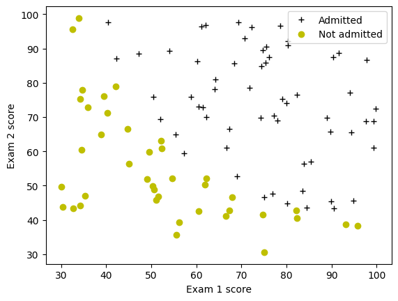

Logistic Regression#
In this exercise, you will implement logistic regression and apply it to two different datasets.
NOTE: To prevent errors from the autograder, you are not allowed to edit or delete non-graded cells in this lab. Please also refrain from adding any new cells. Once you have passed this assignment and want to experiment with any of the non-graded code, you may follow the instructions at the bottom of this notebook.
1 - Packages#
First, let’s run the cell below to import all the packages that you will need during this assignment.
numpy is the fundamental package for scientific computing with Python.
matplotlib is a famous library to plot graphs in Python.
utils.pycontains helper functions for this assignment. You do not need to modify code in this file.
import numpy as np
import matplotlib.pyplot as plt
from utils import *
import copy
import math
%matplotlib inline
2 - Logistic Regression#
In this part of the exercise, you will build a logistic regression model to predict whether a student gets admitted into a university.
2.1 Problem Statement#
Suppose that you are the administrator of a university department and you want to determine each applicant’s chance of admission based on their results on two exams.
You have historical data from previous applicants that you can use as a training set for logistic regression.
For each training example, you have the applicant’s scores on two exams and the admissions decision.
Your task is to build a classification model that estimates an applicant’s probability of admission based on the scores from those two exams.
2.2 Loading and visualizing the data#
You will start by loading the dataset for this task.
The
load_dataset()function shown below loads the data into variablesX_trainandy_trainX_traincontains exam scores on two exams for a studenty_trainis the admission decisiony_train = 1if the student was admittedy_train = 0if the student was not admitted
Both
X_trainandy_trainare numpy arrays.
# load dataset
X_train, y_train = load_data("data/ex2data1.txt")
View the variables#
Let’s get more familiar with your dataset.
A good place to start is to just print out each variable and see what it contains.
The code below prints the first five values of X_train and the type of the variable.
print("First five elements in X_train are:\n", X_train[:5])
print("Type of X_train:",type(X_train))
First five elements in X_train are:
[[34.62365962 78.02469282]
[30.28671077 43.89499752]
[35.84740877 72.90219803]
[60.18259939 86.3085521 ]
[79.03273605 75.34437644]]
Type of X_train: <class 'numpy.ndarray'>
Now print the first five values of y_train
print("First five elements in y_train are:\n", y_train[:5])
print("Type of y_train:",type(y_train))
First five elements in y_train are:
[0. 0. 0. 1. 1.]
Type of y_train: <class 'numpy.ndarray'>
Check the dimensions of your variables#
Another useful way to get familiar with your data is to view its dimensions. Let’s print the shape of X_train and y_train and see how many training examples we have in our dataset.
print ('The shape of X_train is: ' + str(X_train.shape))
print ('The shape of y_train is: ' + str(y_train.shape))
print ('We have m = %d training examples' % (len(y_train)))
The shape of X_train is: (100, 2)
The shape of y_train is: (100,)
We have m = 100 training examples
Visualize your data#
Before starting to implement any learning algorithm, it is always good to visualize the data if possible.
The code below displays the data on a 2D plot (as shown below), where the axes are the two exam scores, and the positive and negative examples are shown with different markers.
We use a helper function in the
utils.pyfile to generate this plot.

# Plot examples
plot_data(X_train, y_train[:], pos_label="Admitted", neg_label="Not admitted")
# Set the y-axis label
plt.ylabel('Exam 2 score')
# Set the x-axis label
plt.xlabel('Exam 1 score')
plt.legend(loc="upper right")
plt.show()

Your goal is to build a logistic regression model to fit this data.
With this model, you can then predict if a new student will be admitted based on their scores on the two exams.
2.3 Sigmoid function#
Recall that for logistic regression, the model is represented as
where function \(g\) is the sigmoid function. The sigmoid function is defined as:
Let’s implement the sigmoid function first, so it can be used by the rest of this assignment.
Exercise 1#
Please complete the sigmoid function to calculate
Note that
zis not always a single number, but can also be an array of numbers.If the input is an array of numbers, we’d like to apply the sigmoid function to each value in the input array.
If you get stuck, you can check out the hints presented after the cell below to help you with the implementation.
# UNQ_C1
# GRADED FUNCTION: sigmoid
def sigmoid(z):
"""
Compute the sigmoid of z
Args:
z (ndarray): A scalar, numpy array of any size.
Returns:
g (ndarray): sigmoid(z), with the same shape as z
"""
### START CODE HERE ###
### END SOLUTION ###
return g
Click for hints
numpyhas a function callednp.exp(), which offers a convinient way to calculate the exponential ( \(e^{z}\)) of all elements in the input array (z).
Click for more hints
You can translate \(e^{-z}\) into code as
np.exp(-z)You can translate \(1/e^{-z}\) into code as
1/np.exp(-z)If you’re still stuck, you can check the hints presented below to figure out how to calculate
gHint to calculate g
g = 1 / (1 + np.exp(-z))
When you are finished, try testing a few values by calling sigmoid(x) in the cell below.
For large positive values of x, the sigmoid should be close to 1, while for large negative values, the sigmoid should be close to 0.
Evaluating
sigmoid(0)should give you exactly 0.5.
# Note: You can edit this value
value = 0
print (f"sigmoid({value}) = {sigmoid(value)}")
---------------------------------------------------------------------------
NameError Traceback (most recent call last)
Cell In[8], line 4
1 # Note: You can edit this value
2 value = 0
----> 4 print (f"sigmoid({value}) = {sigmoid(value)}")
Cell In[7], line 20, in sigmoid(z)
5 """
6 Compute the sigmoid of z
7
(...) 13
14 """
16 ### START CODE HERE ###
17
18 ### END SOLUTION ###
---> 20 return g
NameError: name 'g' is not defined
Expected Output:
| sigmoid(0) | 0.5 |
As mentioned before, your code should also work with vectors and matrices. For a matrix, your function should perform the sigmoid function on every element.
print ("sigmoid([ -1, 0, 1, 2]) = " + str(sigmoid(np.array([-1, 0, 1, 2]))))
# UNIT TESTS
from public_tests import *
sigmoid_test(sigmoid)
Expected Output:
| sigmoid([-1, 0, 1, 2]) | [0.26894142 0.5 0.73105858 0.88079708] |
2.4 Cost function for logistic regression#
In this section, you will implement the cost function for logistic regression.
Exercise 2#
Please complete the compute_cost function using the equations below.
Recall that for logistic regression, the cost function is of the form
where
m is the number of training examples in the dataset
\(loss(f_{\mathbf{w},b}(\mathbf{x}^{(i)}), y^{(i)})\) is the cost for a single data point, which is -
\[loss(f_{\mathbf{w},b}(\mathbf{x}^{(i)}), y^{(i)}) = (-y^{(i)} \log\left(f_{\mathbf{w},b}\left( \mathbf{x}^{(i)} \right) \right) - \left( 1 - y^{(i)}\right) \log \left( 1 - f_{\mathbf{w},b}\left( \mathbf{x}^{(i)} \right) \right) \tag{2}\]\(f_{\mathbf{w},b}(\mathbf{x}^{(i)})\) is the model’s prediction, while \(y^{(i)}\), which is the actual label
\(f_{\mathbf{w},b}(\mathbf{x}^{(i)}) = g(\mathbf{w} \cdot \mathbf{x^{(i)}} + b)\) where function \(g\) is the sigmoid function.
It might be helpful to first calculate an intermediate variable \(z_{\mathbf{w},b}(\mathbf{x}^{(i)}) = \mathbf{w} \cdot \mathbf{x^{(i)}} + b = w_0x^{(i)}_0 + ... + w_{n-1}x^{(i)}_{n-1} + b\) where \(n\) is the number of features, before calculating \(f_{\mathbf{w},b}(\mathbf{x}^{(i)}) = g(z_{\mathbf{w},b}(\mathbf{x}^{(i)}))\)
Note:
As you are doing this, remember that the variables
X_trainandy_trainare not scalar values but matrices of shape (\(m, n\)) and (\(𝑚\),1) respectively, where \(𝑛\) is the number of features and \(𝑚\) is the number of training examples.You can use the sigmoid function that you implemented above for this part.
If you get stuck, you can check out the hints presented after the cell below to help you with the implementation.
# UNQ_C2
# GRADED FUNCTION: compute_cost
def compute_cost(X, y, w, b, *argv):
"""
Computes the cost over all examples
Args:
X : (ndarray Shape (m,n)) data, m examples by n features
y : (ndarray Shape (m,)) target value
w : (ndarray Shape (n,)) values of parameters of the model
b : (scalar) value of bias parameter of the model
*argv : unused, for compatibility with regularized version below
Returns:
total_cost : (scalar) cost
"""
m, n = X.shape
### START CODE HERE ###
### END CODE HERE ###
return total_cost
Click for hints
You can represent a summation operator eg: \(h = \sum\limits_{i = 0}^{m-1} 2i\) in code as follows:
h = 0
for i in range(m):
h = h + 2*i
In this case, you can iterate over all the examples in
Xusing a for loop and add thelossfrom each iteration to a variable (loss_sum) initialized outside the loop.Then, you can return the
total_costasloss_sumdivided bym.If you are new to Python, please check that your code is properly indented with consistent spaces or tabs. Otherwise, it might produce a different output or raise an
IndentationError: unexpected indenterror. You can refer to this topic in our community for details.
Click for more hints
Here’s how you can structure the overall implementation for this function
def compute_cost(X, y, w, b, *argv):
m, n = X.shape
### START CODE HERE ###
loss_sum = 0
# Loop over each training example
for i in range(m):
# First calculate z_wb = w[0]*X[i][0]+...+w[n-1]*X[i][n-1]+b
z_wb = 0
# Loop over each feature
for j in range(n):
# Add the corresponding term to z_wb
z_wb_ij = # Your code here to calculate w[j] * X[i][j]
z_wb += z_wb_ij # equivalent to z_wb = z_wb + z_wb_ij
# Add the bias term to z_wb
z_wb += b # equivalent to z_wb = z_wb + b
f_wb = # Your code here to calculate prediction f_wb for a training example
loss = # Your code here to calculate loss for a training example
loss_sum += loss # equivalent to loss_sum = loss_sum + loss
total_cost = (1 / m) * loss_sum
### END CODE HERE ###
return total_cost
If you’re still stuck, you can check the hints presented below to figure out how to calculate z_wb_ij, f_wb and cost.
Hint to calculate z_wb_ij
z_wb_ij = w[j]*X[i][j]
Hint to calculate f_wb
$f_{\mathbf{w},b}(\mathbf{x}^{(i)}) = g(z_{\mathbf{w},b}(\mathbf{x}^{(i)}))$ where $g$ is the sigmoid function. You can simply call the `sigmoid` function implemented above.More hints to calculate f
You can compute f_wb asf_wb = sigmoid(z_wb)
Hint to calculate loss
You can use the np.log function to calculate the logMore hints to calculate loss
You can compute loss asloss = -y[i] * np.log(f_wb) - (1 - y[i]) * np.log(1 - f_wb)
Run the cells below to check your implementation of the compute_cost function with two different initializations of the parameters \(w\) and \(b\)
m, n = X_train.shape
# Compute and display cost with w and b initialized to zeros
initial_w = np.zeros(n)
initial_b = 0.
cost = compute_cost(X_train, y_train, initial_w, initial_b)
print('Cost at initial w and b (zeros): {:.3f}'.format(cost))
Expected Output:
| Cost at initial w and b (zeros) | 0.693 |
# Compute and display cost with non-zero w and b
test_w = np.array([0.2, 0.2])
test_b = -24.
cost = compute_cost(X_train, y_train, test_w, test_b)
print('Cost at test w and b (non-zeros): {:.3f}'.format(cost))
# UNIT TESTS
compute_cost_test(compute_cost)
Expected Output:
| Cost at test w and b (non-zeros): | 0.218 |
2.5 Gradient for logistic regression#
In this section, you will implement the gradient for logistic regression.
Recall that the gradient descent algorithm is:
where, parameters \(b\), \(w_j\) are all updated simultaniously
Exercise 3#
Please complete the compute_gradient function to compute \(\frac{\partial J(\mathbf{w},b)}{\partial w}\), \(\frac{\partial J(\mathbf{w},b)}{\partial b}\) from equations (2) and (3) below.
m is the number of training examples in the dataset
\(f_{\mathbf{w},b}(x^{(i)})\) is the model’s prediction, while \(y^{(i)}\) is the actual label
Note: While this gradient looks identical to the linear regression gradient, the formula is actually different because linear and logistic regression have different definitions of \(f_{\mathbf{w},b}(x)\).
As before, you can use the sigmoid function that you implemented above and if you get stuck, you can check out the hints presented after the cell below to help you with the implementation.
# UNQ_C3
# GRADED FUNCTION: compute_gradient
def compute_gradient(X, y, w, b, *argv):
"""
Computes the gradient for logistic regression
Args:
X : (ndarray Shape (m,n)) data, m examples by n features
y : (ndarray Shape (m,)) target value
w : (ndarray Shape (n,)) values of parameters of the model
b : (scalar) value of bias parameter of the model
*argv : unused, for compatibility with regularized version below
Returns
dj_dw : (ndarray Shape (n,)) The gradient of the cost w.r.t. the parameters w.
dj_db : (scalar) The gradient of the cost w.r.t. the parameter b.
"""
m, n = X.shape
dj_dw = np.zeros(w.shape)
dj_db = 0.
### START CODE HERE ###
for i in range(m):
z_wb = None
for j in range(n):
z_wb += None
z_wb += None
f_wb = None
dj_db_i = None
dj_db += None
for j in range(n):
dj_dw[j] = None
dj_dw = None
dj_db = None
### END CODE HERE ###
return dj_db, dj_dw
Click for hints
Here’s how you can structure the overall implementation for this function
def compute_gradient(X, y, w, b, *argv): m, n = X.shape dj_dw = np.zeros(w.shape) dj_db = 0. ### START CODE HERE ### for i in range(m): # Calculate f_wb (exactly as you did in the compute_cost function above) f_wb = # Calculate the gradient for b from this example dj_db_i = # Your code here to calculate the error # add that to dj_db dj_db += dj_db_i # get dj_dw for each attribute for j in range(n): # You code here to calculate the gradient from the i-th example for j-th attribute dj_dw_ij = dj_dw[j] += dj_dw_ij # divide dj_db and dj_dw by total number of examples dj_dw = dj_dw / m dj_db = dj_db / m ### END CODE HERE ### return dj_db, dj_dw
If you are new to Python, please check that your code is properly indented with consistent spaces or tabs. Otherwise, it might produce a different output or raise an
IndentationError: unexpected indenterror. You can refer to this topic in our community for details.If you’re still stuck, you can check the hints presented below to figure out how to calculate
f_wb,dj_db_ianddj_dw_ij
Hint to calculate f_wb
Recall that you calculated f_wb incompute_costabove — for detailed hints on how to calculate each intermediate term, check out the hints section below that exerciseMore hints to calculate f_wb
You can calculate f_wb asfor i in range(m): # Calculate f_wb (exactly how you did it in the compute_cost function above) z_wb = 0 # Loop over each feature for j in range(n): # Add the corresponding term to z_wb z_wb_ij = X[i, j] * w[j] z_wb += z_wb_ij# Add bias term z_wb += b # Calculate the prediction from the model f_wb = sigmoid(z_wb)Hint to calculate dj_db_i
You can calculate dj_db_i asdj_db_i = f_wb - y[i]Hint to calculate dj_dw_ij
You can calculate dj_dw_ij asdj_dw_ij = (f_wb - y[i])* X[i][j]
Run the cells below to check your implementation of the compute_gradient function with two different initializations of the parameters \(w\) and \(b\)
# Compute and display gradient with w and b initialized to zeros
initial_w = np.zeros(n)
initial_b = 0.
dj_db, dj_dw = compute_gradient(X_train, y_train, initial_w, initial_b)
print(f'dj_db at initial w and b (zeros):{dj_db}' )
print(f'dj_dw at initial w and b (zeros):{dj_dw.tolist()}' )
Expected Output:
| dj_db at initial w and b (zeros) | -0.1 |
| dj_dw at initial w and b (zeros): | [-12.00921658929115, -11.262842205513591] |
# Compute and display cost and gradient with non-zero w and b
test_w = np.array([ 0.2, -0.5])
test_b = -24
dj_db, dj_dw = compute_gradient(X_train, y_train, test_w, test_b)
print('dj_db at test w and b:', dj_db)
print('dj_dw at test w and b:', dj_dw.tolist())
# UNIT TESTS
compute_gradient_test(compute_gradient)
Expected Output:
| dj_db at test w and b (non-zeros) | -0.5999999999991071 |
| dj_dw at test w and b (non-zeros): | [-44.8313536178737957, -44.37384124953978] |
2.6 Learning parameters using gradient descent#
Similar to the previous assignment, you will now find the optimal parameters of a logistic regression model by using gradient descent.
You don’t need to implement anything for this part. Simply run the cells below.
A good way to verify that gradient descent is working correctly is to look at the value of \(J(\mathbf{w},b)\) and check that it is decreasing with each step.
Assuming you have implemented the gradient and computed the cost correctly, your value of \(J(\mathbf{w},b)\) should never increase, and should converge to a steady value by the end of the algorithm.
def gradient_descent(X, y, w_in, b_in, cost_function, gradient_function, alpha, num_iters, lambda_):
"""
Performs batch gradient descent to learn theta. Updates theta by taking
num_iters gradient steps with learning rate alpha
Args:
X : (ndarray Shape (m, n) data, m examples by n features
y : (ndarray Shape (m,)) target value
w_in : (ndarray Shape (n,)) Initial values of parameters of the model
b_in : (scalar) Initial value of parameter of the model
cost_function : function to compute cost
gradient_function : function to compute gradient
alpha : (float) Learning rate
num_iters : (int) number of iterations to run gradient descent
lambda_ : (scalar, float) regularization constant
Returns:
w : (ndarray Shape (n,)) Updated values of parameters of the model after
running gradient descent
b : (scalar) Updated value of parameter of the model after
running gradient descent
"""
# number of training examples
m = len(X)
# An array to store cost J and w's at each iteration primarily for graphing later
J_history = []
w_history = []
for i in range(num_iters):
# Calculate the gradient and update the parameters
dj_db, dj_dw = gradient_function(X, y, w_in, b_in, lambda_)
# Update Parameters using w, b, alpha and gradient
w_in = w_in - alpha * dj_dw
b_in = b_in - alpha * dj_db
# Save cost J at each iteration
if i<100000: # prevent resource exhaustion
cost = cost_function(X, y, w_in, b_in, lambda_)
J_history.append(cost)
# Print cost every at intervals 10 times or as many iterations if < 10
if i% math.ceil(num_iters/10) == 0 or i == (num_iters-1):
w_history.append(w_in)
print(f"Iteration {i:4}: Cost {float(J_history[-1]):8.2f} ")
return w_in, b_in, J_history, w_history #return w and J,w history for graphing
Now let’s run the gradient descent algorithm above to learn the parameters for our dataset.
Note
The code block below takes a couple of minutes to run, especially with a non-vectorized version. You can reduce the iterations to test your implementation and iterate faster. If you have time later, try running 100,000 iterations for better results.
np.random.seed(1)
initial_w = 0.01 * (np.random.rand(2) - 0.5)
initial_b = -8
# Some gradient descent settings
iterations = 10000
alpha = 0.001
w,b, J_history,_ = gradient_descent(X_train ,y_train, initial_w, initial_b,
compute_cost, compute_gradient, alpha, iterations, 0)
Expected Output: Cost 0.30, (Click to see details):
# With the following settings
np.random.seed(1)
initial_w = 0.01 * (np.random.rand(2) - 0.5)
initial_b = -8
iterations = 10000
alpha = 0.001
#
Iteration 0: Cost 0.96
Iteration 1000: Cost 0.31
Iteration 2000: Cost 0.30
Iteration 3000: Cost 0.30
Iteration 4000: Cost 0.30
Iteration 5000: Cost 0.30
Iteration 6000: Cost 0.30
Iteration 7000: Cost 0.30
Iteration 8000: Cost 0.30
Iteration 9000: Cost 0.30
Iteration 9999: Cost 0.30
2.7 Plotting the decision boundary#
We will now use the final parameters from gradient descent to plot the linear fit. If you implemented the previous parts correctly, you should see a plot similar to the following plot:

We will use a helper function in the utils.py file to create this plot.
plot_decision_boundary(w, b, X_train, y_train)
# Set the y-axis label
plt.ylabel('Exam 2 score')
# Set the x-axis label
plt.xlabel('Exam 1 score')
plt.legend(loc="upper right")
plt.show()
2.8 Evaluating logistic regression#
We can evaluate the quality of the parameters we have found by seeing how well the learned model predicts on our training set.
You will implement the predict function below to do this.
Exercise 4#
Please complete the predict function to produce 1 or 0 predictions given a dataset and a learned parameter vector \(w\) and \(b\).
First you need to compute the prediction from the model \(f(x^{(i)}) = g(w \cdot x^{(i)} + b)\) for every example
You’ve implemented this before in the parts above
We interpret the output of the model (\(f(x^{(i)})\)) as the probability that \(y^{(i)}=1\) given \(x^{(i)}\) and parameterized by \(w\).
Therefore, to get a final prediction (\(y^{(i)}=0\) or \(y^{(i)}=1\)) from the logistic regression model, you can use the following heuristic -
if \(f(x^{(i)}) >= 0.5\), predict \(y^{(i)}=1\)
if \(f(x^{(i)}) < 0.5\), predict \(y^{(i)}=0\)
If you get stuck, you can check out the hints presented after the cell below to help you with the implementation.
# UNQ_C4
# GRADED FUNCTION: predict
def predict(X, w, b):
"""
Predict whether the label is 0 or 1 using learned logistic
regression parameters w
Args:
X : (ndarray Shape (m,n)) data, m examples by n features
w : (ndarray Shape (n,)) values of parameters of the model
b : (scalar) value of bias parameter of the model
Returns:
p : (ndarray (m,)) The predictions for X using a threshold at 0.5
"""
# number of training examples
m, n = X.shape
p = np.zeros(m)
### START CODE HERE ###
# Loop over each example
for i in range(m):
z_wb = None
# Loop over each feature
for j in range(n):
# Add the corresponding term to z_wb
z_wb += None
# Add bias term
z_wb += None
# Calculate the prediction for this example
f_wb = None
# Apply the threshold
p[i] = None
### END CODE HERE ###
return p
Click for hints
Here’s how you can structure the overall implementation for this function
def predict(X, w, b): # number of training examples m, n = X.shape p = np.zeros(m) ### START CODE HERE ### # Loop over each example for i in range(m): # Calculate f_wb (exactly how you did it in the compute_cost function above) # using a couple of lines of code f_wb = # Calculate the prediction for that training example p[i] = # Your code here to calculate the prediction based on f_wb ### END CODE HERE ### return p
If you’re still stuck, you can check the hints presented below to figure out how to calculate
f_wbandp[i]Hint to calculate f_wb
Recall that you calculated f_wb incompute_costabove — for detailed hints on how to calculate each intermediate term, check out the hints section below that exerciseMore hints to calculate f_wb
You can calculate f_wb asfor i in range(m): # Calculate f_wb (exactly how you did it in the compute_cost function above) z_wb = 0 # Loop over each feature for j in range(n): # Add the corresponding term to z_wb z_wb_ij = X[i, j] * w[j] z_wb += z_wb_ij# Add bias term z_wb += b # Calculate the prediction from the model f_wb = sigmoid(z_wb)Hint to calculate p[i]
As an example, if you'd like to say x = 1 if y is less than 3 and 0 otherwise, you can express it in code asx = y < 3. Now do the same for p[i] = 1 if f_wb >= 0.5 and 0 otherwise.More hints to calculate p[i]
You can compute p[i] asp[i] = f_wb >= 0.5
Once you have completed the function predict, let’s run the code below to report the training accuracy of your classifier by computing the percentage of examples it got correct.
# Test your predict code
np.random.seed(1)
tmp_w = np.random.randn(2)
tmp_b = 0.3
tmp_X = np.random.randn(4, 2) - 0.5
tmp_p = predict(tmp_X, tmp_w, tmp_b)
print(f'Output of predict: shape {tmp_p.shape}, value {tmp_p}')
# UNIT TESTS
predict_test(predict)
Expected output
| Output of predict: shape (4,),value [0. 1. 1. 1.] |
Now let’s use this to compute the accuracy on the training set
#Compute accuracy on our training set
p = predict(X_train, w,b)
print('Train Accuracy: %f'%(np.mean(p == y_train) * 100))
| Train Accuracy (approx): | 92.00 |
3 - Regularized Logistic Regression#
In this part of the exercise, you will implement regularized logistic regression to predict whether microchips from a fabrication plant passes quality assurance (QA). During QA, each microchip goes through various tests to ensure it is functioning correctly.
3.1 Problem Statement#
Suppose you are the product manager of the factory and you have the test results for some microchips on two different tests.
From these two tests, you would like to determine whether the microchips should be accepted or rejected.
To help you make the decision, you have a dataset of test results on past microchips, from which you can build a logistic regression model.
3.2 Loading and visualizing the data#
Similar to previous parts of this exercise, let’s start by loading the dataset for this task and visualizing it.
The
load_dataset()function shown below loads the data into variablesX_trainandy_trainX_traincontains the test results for the microchips from two testsy_traincontains the results of the QAy_train = 1if the microchip was acceptedy_train = 0if the microchip was rejected
Both
X_trainandy_trainare numpy arrays.
# load dataset
X_train, y_train = load_data("data/ex2data2.txt")
View the variables#
The code below prints the first five values of X_train and y_train and the type of the variables.
# print X_train
print("X_train:", X_train[:5])
print("Type of X_train:",type(X_train))
# print y_train
print("y_train:", y_train[:5])
print("Type of y_train:",type(y_train))
Check the dimensions of your variables#
Another useful way to get familiar with your data is to view its dimensions. Let’s print the shape of X_train and y_train and see how many training examples we have in our dataset.
print ('The shape of X_train is: ' + str(X_train.shape))
print ('The shape of y_train is: ' + str(y_train.shape))
print ('We have m = %d training examples' % (len(y_train)))
Visualize your data#
The helper function plot_data (from utils.py) is used to generate a figure like Figure 3, where the axes are the two test scores, and the positive (y = 1, accepted) and negative (y = 0, rejected) examples are shown with different markers.

# Plot examples
plot_data(X_train, y_train[:], pos_label="Accepted", neg_label="Rejected")
# Set the y-axis label
plt.ylabel('Microchip Test 2')
# Set the x-axis label
plt.xlabel('Microchip Test 1')
plt.legend(loc="upper right")
plt.show()
Figure 3 shows that our dataset cannot be separated into positive and negative examples by a straight-line through the plot. Therefore, a straight forward application of logistic regression will not perform well on this dataset since logistic regression will only be able to find a linear decision boundary.
3.3 Feature mapping#
One way to fit the data better is to create more features from each data point. In the provided function map_feature, we will map the features into all polynomial terms of \(x_1\) and \(x_2\) up to the sixth power.
As a result of this mapping, our vector of two features (the scores on two QA tests) has been transformed into a 27-dimensional vector.
A logistic regression classifier trained on this higher-dimension feature vector will have a more complex decision boundary and will be nonlinear when drawn in our 2-dimensional plot.
We have provided the
map_featurefunction for you in utils.py.
print("Original shape of data:", X_train.shape)
mapped_X = map_feature(X_train[:, 0], X_train[:, 1])
print("Shape after feature mapping:", mapped_X.shape)
Let’s also print the first elements of X_train and mapped_X to see the tranformation.
print("X_train[0]:", X_train[0])
print("mapped X_train[0]:", mapped_X[0])
While the feature mapping allows us to build a more expressive classifier, it is also more susceptible to overfitting. In the next parts of the exercise, you will implement regularized logistic regression to fit the data and also see for yourself how regularization can help combat the overfitting problem.
3.4 Cost function for regularized logistic regression#
In this part, you will implement the cost function for regularized logistic regression.
Recall that for regularized logistic regression, the cost function is of the form $\(J(\mathbf{w},b) = \frac{1}{m} \sum_{i=0}^{m-1} \left[ -y^{(i)} \log\left(f_{\mathbf{w},b}\left( \mathbf{x}^{(i)} \right) \right) - \left( 1 - y^{(i)}\right) \log \left( 1 - f_{\mathbf{w},b}\left( \mathbf{x}^{(i)} \right) \right) \right] + \frac{\lambda}{2m} \sum_{j=0}^{n-1} w_j^2\)$
Compare this to the cost function without regularization (which you implemented above), which is of the form
The difference is the regularization term, which is $\(\frac{\lambda}{2m} \sum_{j=0}^{n-1} w_j^2\)\( Note that the \)b$ parameter is not regularized.
Exercise 5#
Please complete the compute_cost_reg function below to calculate the following term for each element in \(w\)
$\(\frac{\lambda}{2m} \sum_{j=0}^{n-1} w_j^2\)$
The starter code then adds this to the cost without regularization (which you computed above in compute_cost) to calculate the cost with regulatization.
If you get stuck, you can check out the hints presented after the cell below to help you with the implementation.
# UNQ_C5
def compute_cost_reg(X, y, w, b, lambda_ = 1):
"""
Computes the cost over all examples
Args:
X : (ndarray Shape (m,n)) data, m examples by n features
y : (ndarray Shape (m,)) target value
w : (ndarray Shape (n,)) values of parameters of the model
b : (scalar) value of bias parameter of the model
lambda_ : (scalar, float) Controls amount of regularization
Returns:
total_cost : (scalar) cost
"""
m, n = X.shape
# Calls the compute_cost function that you implemented above
cost_without_reg = compute_cost(X, y, w, b)
# You need to calculate this value
reg_cost = 0.
### START CODE HERE ###
### END CODE HERE ###
# Add the regularization cost to get the total cost
total_cost = cost_without_reg + reg_cost
return total_cost
Click for hints
Here’s how you can structure the overall implementation for this function
def compute_cost_reg(X, y, w, b, lambda_ = 1): m, n = X.shape # Calls the compute_cost function that you implemented above cost_without_reg = compute_cost(X, y, w, b) # You need to calculate this value reg_cost = 0. ### START CODE HERE ### for j in range(n): reg_cost_j = # Your code here to calculate the cost from w[j] reg_cost = reg_cost + reg_cost_j reg_cost = (lambda_/(2 * m)) * reg_cost ### END CODE HERE ### # Add the regularization cost to get the total cost total_cost = cost_without_reg + reg_cost return total_cost
If you’re still stuck, you can check the hints presented below to figure out how to calculate
reg_cost_jHint to calculate reg_cost_j
You can use calculate reg_cost_j asreg_cost_j = w[j]**2
Run the cell below to check your implementation of the compute_cost_reg function.
X_mapped = map_feature(X_train[:, 0], X_train[:, 1])
np.random.seed(1)
initial_w = np.random.rand(X_mapped.shape[1]) - 0.5
initial_b = 0.5
lambda_ = 0.5
cost = compute_cost_reg(X_mapped, y_train, initial_w, initial_b, lambda_)
print("Regularized cost :", cost)
# UNIT TEST
compute_cost_reg_test(compute_cost_reg)
Expected Output:
| Regularized cost : | 0.6618252552483948 |
3.5 Gradient for regularized logistic regression#
In this section, you will implement the gradient for regularized logistic regression.
The gradient of the regularized cost function has two components. The first, \(\frac{\partial J(\mathbf{w},b)}{\partial b}\) is a scalar, the other is a vector with the same shape as the parameters \(\mathbf{w}\), where the \(j^\mathrm{th}\) element is defined as follows:
Compare this to the gradient of the cost function without regularization (which you implemented above), which is of the form $\( \frac{\partial J(\mathbf{w},b)}{\partial b} = \frac{1}{m} \sum\limits_{i = 0}^{m-1} (f_{\mathbf{w},b}(\mathbf{x}^{(i)}) - \mathbf{y}^{(i)}) \tag{2} \)\( \)\( \frac{\partial J(\mathbf{w},b)}{\partial w_j} = \frac{1}{m} \sum\limits_{i = 0}^{m-1} (f_{\mathbf{w},b}(\mathbf{x}^{(i)}) - \mathbf{y}^{(i)})x_{j}^{(i)} \tag{3} \)$
As you can see,\(\frac{\partial J(\mathbf{w},b)}{\partial b}\) is the same, the difference is the following term in \(\frac{\partial J(\mathbf{w},b)}{\partial w}\), which is $\(\frac{\lambda}{m} w_j \quad\, \text{for \)j=0…(n-1)\(}\)$
Exercise 6#
Please complete the compute_gradient_reg function below to modify the code below to calculate the following term
The starter code will add this term to the \(\frac{\partial J(\mathbf{w},b)}{\partial w}\) returned from compute_gradient above to get the gradient for the regularized cost function.
If you get stuck, you can check out the hints presented after the cell below to help you with the implementation.
# UNQ_C6
def compute_gradient_reg(X, y, w, b, lambda_ = 1):
"""
Computes the gradient for logistic regression with regularization
Args:
X : (ndarray Shape (m,n)) data, m examples by n features
y : (ndarray Shape (m,)) target value
w : (ndarray Shape (n,)) values of parameters of the model
b : (scalar) value of bias parameter of the model
lambda_ : (scalar,float) regularization constant
Returns
dj_db : (scalar) The gradient of the cost w.r.t. the parameter b.
dj_dw : (ndarray Shape (n,)) The gradient of the cost w.r.t. the parameters w.
"""
m, n = X.shape
dj_db, dj_dw = compute_gradient(X, y, w, b)
### START CODE HERE ###
### END CODE HERE ###
return dj_db, dj_dw
Click for hints
Here’s how you can structure the overall implementation for this function
def compute_gradient_reg(X, y, w, b, lambda_ = 1): m, n = X.shape dj_db, dj_dw = compute_gradient(X, y, w, b) ### START CODE HERE ### # Loop over the elements of w for j in range(n): dj_dw_j_reg = # Your code here to calculate the regularization term for dj_dw[j] # Add the regularization term to the correspoding element of dj_dw dj_dw[j] = dj_dw[j] + dj_dw_j_reg ### END CODE HERE ### return dj_db, dj_dw
If you’re still stuck, you can check the hints presented below to figure out how to calculate
dj_dw_j_regHint to calculate dj_dw_j_reg
You can use calculate dj_dw_j_reg asdj_dw_j_reg = (lambda_ / m) * w[j]
Run the cell below to check your implementation of the compute_gradient_reg function.
X_mapped = map_feature(X_train[:, 0], X_train[:, 1])
np.random.seed(1)
initial_w = np.random.rand(X_mapped.shape[1]) - 0.5
initial_b = 0.5
lambda_ = 0.5
dj_db, dj_dw = compute_gradient_reg(X_mapped, y_train, initial_w, initial_b, lambda_)
print(f"dj_db: {dj_db}", )
print(f"First few elements of regularized dj_dw:\n {dj_dw[:4].tolist()}", )
# UNIT TESTS
compute_gradient_reg_test(compute_gradient_reg)
Expected Output:
| dj_db:0.07138288792343 |
| First few elements of regularized dj_dw: |
| [[-0.010386028450548], [0.011409852883280], [0.0536273463274], [0.003140278267313]] |
3.6 Learning parameters using gradient descent#
Similar to the previous parts, you will use your gradient descent function implemented above to learn the optimal parameters \(w\),\(b\).
If you have completed the cost and gradient for regularized logistic regression correctly, you should be able to step through the next cell to learn the parameters \(w\).
After training our parameters, we will use it to plot the decision boundary.
Note
The code block below takes quite a while to run, especially with a non-vectorized version. You can reduce the iterations to test your implementation and iterate faster. If you have time later, run for 100,000 iterations to see better results.
# Initialize fitting parameters
np.random.seed(1)
initial_w = np.random.rand(X_mapped.shape[1])-0.5
initial_b = 1.
# Set regularization parameter lambda_ (you can try varying this)
lambda_ = 0.01
# Some gradient descent settings
iterations = 10000
alpha = 0.01
w,b, J_history,_ = gradient_descent(X_mapped, y_train, initial_w, initial_b,
compute_cost_reg, compute_gradient_reg,
alpha, iterations, lambda_)
Expected Output: Cost < 0.5 (Click for details)
# Using the following settings
#np.random.seed(1)
#initial_w = np.random.rand(X_mapped.shape[1])-0.5
#initial_b = 1.
#lambda_ = 0.01;
#iterations = 10000
#alpha = 0.01
Iteration 0: Cost 0.72
Iteration 1000: Cost 0.59
Iteration 2000: Cost 0.56
Iteration 3000: Cost 0.53
Iteration 4000: Cost 0.51
Iteration 5000: Cost 0.50
Iteration 6000: Cost 0.48
Iteration 7000: Cost 0.47
Iteration 8000: Cost 0.46
Iteration 9000: Cost 0.45
Iteration 9999: Cost 0.45
3.7 Plotting the decision boundary#
To help you visualize the model learned by this classifier, we will use our plot_decision_boundary function which plots the (non-linear) decision boundary that separates the positive and negative examples.
In the function, we plotted the non-linear decision boundary by computing the classifier’s predictions on an evenly spaced grid and then drew a contour plot of where the predictions change from y = 0 to y = 1.
After learning the parameters \(w\),\(b\), the next step is to plot a decision boundary similar to Figure 4.

plot_decision_boundary(w, b, X_mapped, y_train)
# Set the y-axis label
plt.ylabel('Microchip Test 2')
# Set the x-axis label
plt.xlabel('Microchip Test 1')
plt.legend(loc="upper right")
plt.show()
3.8 Evaluating regularized logistic regression model#
You will use the predict function that you implemented above to calculate the accuracy of the regularized logistic regression model on the training set
#Compute accuracy on the training set
p = predict(X_mapped, w, b)
print('Train Accuracy: %f'%(np.mean(p == y_train) * 100))
Expected Output:
| Train Accuracy:~ 80% |
Congratulations on completing the final lab of this course! We hope to see you in Course 2 where you will use more advanced learning algorithms such as neural networks and decision trees. Keep learning!
Please click here if you want to experiment with any of the non-graded code.
Important Note: Please only do this when you've already passed the assignment to avoid problems with the autograder.
- On the notebook’s menu, click “View” > “Cell Toolbar” > “Edit Metadata”
- Hit the “Edit Metadata” button next to the code cell which you want to lock/unlock
- Set the attribute value for “editable” to:
- “true” if you want to unlock it
- “false” if you want to lock it
- On the notebook’s menu, click “View” > “Cell Toolbar” > “None”
Here's a short demo of how to do the steps above: